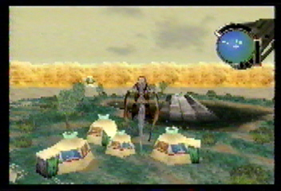

The Role of the Hunters
Wise Old Coolia: Now listen well young one, I have observed the ones they call Hunters for many years. Hunters live in small communities, traveling from one area to the next. They will travel to areas that are most suitable for their survival. They hunt various monsters in order to sustain themselves. To the Hunters, various monster fluids and body parts are a necessity.
Young Energetic Coolia: What sorts of things do they use the monster parts for?
Wise Old Coolia: Well, let me explain. Internal organs are used to make antidotes and the meat provides nourishment.
Young Energetic Coolia: So, the Hunters are going to use your internal organs for antidotes and roast your tender body over the fire! That is just wrong, I think I need to leave now. No, I need to run!(Runs franticly and trips)
Wise Old Coolia: No you fool, the Hunters don't use Coolia fluids and body parts! They only use the fluids and body parts from outside monsters, that are a threat to their survival.
Wise Old Coolia: (Sigh) Now, where was I? Oh yes, a Hunters main role is to keep everyone within the community safe, and to defend human settlements from monster attacks. Their primary goal is to survive, and an integral part of their survival involves trade with the outside world. |
A small Hunter Community. |
 Hunters tend to travel to areas with abundant resources. |
This Hunter Community is stationed in an area with a reliable water source, and plenty of food can be harvested from the vegetation around them. |
Monster fluids and body parts have many uses, such as food, medicines, and antidotes. |
The prize catch of the Hunt. |